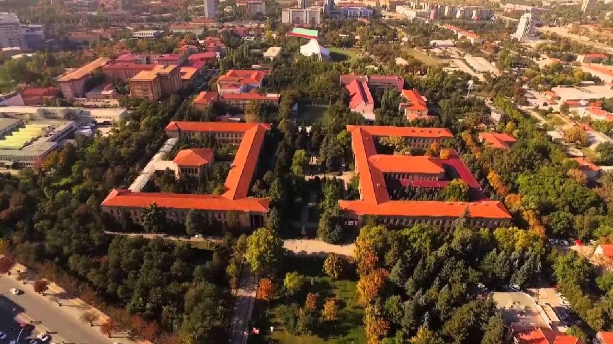

Ankara adının kaynağı ile ilgili olarak ilk bilgileri antik yazar Stephanos Byzantinos'dan öğrenmekteyiz.Yazar; kenti, Galatlar'ın kurduğundan bahsederek, ilk adının Grekçe ANKYPA, Latince ANCYRA olduğunu söyler. ANKYPA, Grekçe'de gemi çapası anlamına gelmektedir. Yazara göre kentin kurucuları olan Galatlar, Pontos Kralı Mithradates'in (MÖ 302-265) yanında, Mısır'da hüküm süren Ptolemaioslar'a karşı Karadeniz'de savaşmışlardır. Galat askerilerinin yardımı ile Ptolemaioslar'a galip gelen Mithradates, Galatlar'a hediye olarak, değerli topraklar ve savaşta ganimet olarak ele geçirilen bir gemi çapası hediye ederler. Galatlar kendilerine verilen Ankara ve çevresindeki topraklara yerleşir ve gemi çapasını da kurdukları kentteki Men Tapınağı'na hediye ederler.

Helenistik dönemde Galat boylarından Tektosag’ların başkenti olan Ankara, Roma döneminde taşra örgütünün başkenti, Bizans döneminde imparatorların konakladığı önemli bir kent, Osmanlı döneminde ise Anadolu Eyaleti’nin merkezi olmuştur. İlk kuruluş tarihi kesin olarak bilinmemekle birlikte, kent çevresinde yapılan araştırmalarda bulunan tarih-öncesi izler, şehrin insanoğlunun yerleşik düzene geçtiği dönemlerde kurulduğunu göstermektedir. Buluntular ve araştırmacıların yaptıkları incelemeler, Ankara’da Hititlerin, Friglerin, Lidyalıların ve Galatların yaşamış olduklarını göstermektedir. Şehrin yerleşik düzeni çok eskilere dayanmasına rağmen tarihi, ancak; Hitit devrinden itibaren takip edilebilmektedir. Ankara’nın doğusunda bulunan Çorum ili sınırları içinde Boğazköy’de (Hattuşa) yapılan kazılarda, şehirle ilgili önemli ipuçları elde edilmiştir. Bir kısım yabancı tarihçilere göre Hitit eserlerinde sıkça rastlanan Ankuwa, muhtemelen bugünkü Ankara şehrinin bulunduğu yerdedir.
Hititlerden sonra yöreye Friglerin hakim oldukları görülmektedir. Eski çağ kaynaklarındaki bir efsaneye göre de Ankara’yı büyük Frig kralı Midas kurmuştur. Şehir merkezi Ulus’ta yapılan kazılarda, Friglerin oturduğuna dair kesin bilgiler elde edilmiştir. Frig devletinin yıkılmasında birinci derecede rol oynayan Kimmer istilasından sonra Ankara Lidyalıların eline geçmiştir. Fakat bu hakimiyet Pers kralı Kyros’un bütün Anadolu ile birlikte Ankara’yı da zapt etmesi üzerine çok çabuk sona ermiştir. Aradan iki asır geçtikten sonra Büyük İskender, Anadolu’daki Pers hakimiyetine son vermiştir. İmparator Augustos’un Ankara’yı kesin olarak almasından sonra burası bir eyalet olarak gelişmiş, mabetler, pazaryerleri, yollar ve suyolları yapılmıştır. Ankara 334–1073 yılları arasında Bizans İmparatorluğu’nun hakimiyeti altında kalmıştır. Bu süre zarfında da Hıristiyanlığın Anadolu’daki önemli bir merkezi olmuştur. VII. yüzyıldaki Sasani akınlarından sonra Araplar şehri bir süre ellerinde tutmuşlardır.
Ankara’nın kaderi Bizans ordularının Selçuklu Sultanı Alpaslan tarafından 1071 yılında mağlup edilmesiyle sonuçlanan Malazgirt Meydan Muharebesi ile tayin edilmiştir. Bu galibiyet sonucunda şehir Türklerin eline geçmiştir. Ankara’nın Türklerin eline geçmesi son derece önemlidir. Çünkü Ankara Kalesi askeri bakımdan önemli bir konumdaydı. Diğer taraftan, Ege liman kentlerinden başlayarak Mezopotamya ve diğer doğu ülkelerine kadar uzanan önemli yollar üzerinde bulunan bölge, aynı zamanda doğal kaynaklar açısından da zengindi. Ankara’nın en parlak devri Alâaddin Keykubat zamanıdır. Bu dönemde şehir askeri bakımdan tahkim edilmiş, cami ve medrese gibi dini ve ilmi eserlerle de imar edilmiştir.
Selçuklu sultanı II. Gıyaseddin Keyhüsrev zamanında şehir Moğolların istilasına uğramış, tüm çabalara rağmen istilanın önüne geçilememiştir. Sultan Gıyasettin Keyhüsrev Moğol saldırıları karşısında Ankara Kalesine sığınmıştır. Moğol saldırıları sonunda Selçuklu devleti zayıf düşmüş ve bu durum Anadolu’nun İlhanlılar devletinin egemenliği altına girmesine kadar sürmüştür. Ankara bir süre İlhanlıların gönderdiği valilerin, sonra da Eretna oğullarının yönetimi altında kalmıştır. 1354 yılında Orhan Gazi’nin oğlu Süleyman Paşa, şehri Osmanlı ülkesine katmıştır. Yıldırım Beyazıt devrine kadar önemli bir olay olmamıştır. Ankara Savaşı’ndan sonra şehrin kaderi de değişmiştir. Timur Ankara’dan ayrıldığı sırada, Yıldırım Beyazıt’ın oğlu Mehmet Çelebi padişahlığını ilan etmiş ve böylece Ankara’yı da almıştır. Kanuni Sultan Süleyman devrinde Anadolu’da bir eyalet örgütü kurulmuş ve Ankara bu Anadolu eyaletlerinden birinin merkezi olmuştur. Şehir 17. y.y. başlarında Celali Ayaklanması sırasında isyancıların eline düşmüştür. II. Mahmut’a isyan eden Mısır valisi Mehmet Ali Paşa’nın kısa bir zaman hakimiyetine giren Ankara, tekrar Osmanlıların eline geçmiş ve artık hiçbir istilaya uğramadan bir Osmanlı vilayeti olarak kalmıştır.
Balkan Savaşı sonunda Rumeli vilayetlerinin çoğunun kaybedilmesiyle, batıdaki Türk sınırları İstanbul’a çok yaklaşmıştı. İstanbul Boğazı’nın ele geçirilmesi de oldukça kolaylaşmıştı. Bu yüzden devlet merkezinin İstanbul’da kalması tehlikeli ve sakıncalı görülerek, başkentin Anadolu içinde başka bir şehre taşınılması düşünülmüştür. Savaş yıllarında en çok saldırı batıdan gelmekteydi ve Ankara bu saldırılara hayli uzak kalıyordu. 27 Aralık 1919 tarihinde, başta Mustafa Kemal Paşa olmak üzere “Anadolu ve Rumeli Müdafaa-i Hukuk Cemiyeti Heyeti Temsiliyesi” Ankara’ya gelerek 29 Aralık 1919’da yayımlanan bir tebliğ ile bütün mebuslara toplantının Ankara’da yapılacağını duyurmuştur. Bu genelgeden sonra 23 Nisan 1920 tarihinde kurulan Türkiye Büyük Millet Meclisi Hükümetinin merkezi Ankara olarak ilan edilmiştir. 13 Ekim 1923 tarihinde çıkarılan bir kanun ile Ankara, Türkiye Cumhuriyeti’nin başkenti olmuştur. Başkent seçildiği yıllarda Ankara çok az sayıda binası olan küçük, yoksul ve çorak bir şehirdi. İstiklal Savaşımızın hazırlanıp sevk ve idare edildiği bir merkez olarak Milli Mücadelemizin sembolü haline gelen bu tarihi şehir, 29 Ekim 1923 tarihinde Türkiye Cumhuriyeti’nin ilanından sonra, giderek büyümüş, yepyeni, büyük ve modern bir görünüm kazanmıştır.

26.897 km2’lik bir alana sahip olan Ankara, 39.57 K enlemi ile 32,53 D boylamları arasında yer alır. Deniz seviyesinden yüksekliği yaklaşık 890 m’dir. Doğu yönünde Kırşehir ve Kırıkkale, Batı yönünde Eskişehir, Kuzey yönünde Çankırı, kuzeybatı yönünde Bolu ve Güney yönünde Konya ve Aksaray illeri ile çevrilmiştir. İlçeleri; Altındağ, Çankaya, Mamak, Keçiören, Sincan, Yenimahalle, Akyurt, Beypazarı, Çamlıdere, Çubuk, Elmadağ, Etimesgut, Evren, Kazan, Gölbaşı, Bala, Ayaş, Güdül, Haymana, Kalecik, Kızılcahamam, Nallıhan, Polatlı, Pursaklar ve Şereflikoçhisardır.

İlin geniş arazisinde yer yer iklim farklılıkları görülür. Güneyde, İç Anadolu ikliminin belirgin özellikleri olan step iklimi, kuzeyde ise, Karadeniz ikliminin ılıman ve yağışlı halleri görülebilir. Kara ikliminin hüküm sürdüğü bu bölgede kış sıcaklıkları düşük, yaz ise sıcak geçer. En sıcak ay Temmuz-Ağustos, en soğuk ay ise Ocak ayıdır. Bölgeye düşen yağış miktarları Kuzey ve Güney kesimlerde farklılık gösterir. Kuzey yönünde yer alan Kızılcahamam ve Çubuk ilçeleri Karadeniz Bölgesi yağış rejimi özelliğini; Güney yönünde ise İç Anadolu Bölgesine özgü iklim karakterini gösterir. Bölgenin yapısı gereği özellikle kış aylarında sis olayı oldukça fazla görülür ve hayatı etkiler. İl ölçeğinde ortalama sıcaklık 11,7 C olup, yıllık ortalama yağış miktarı 389,1 mm’dir. En yüksek sıcaklık değeri 40,8 C ve en düşük sıcaklık -24,9 C olarak tespit edilmiştir. Don olayı görülen gün sayısı 60–117, karlı günler sayısı ise yılda 30,5 gündür. En yüksek kar kalınlığı 30 cm olarak tespit edilmiştir. İl merkezi ve istasyonların rüzgar durumuna genel olarak bakıldığında; hakim rüzgarın arazi yapısına bağlı olarak değiştiği görülür. Buna göre; hakim rüzgar Ankara (merkez), Esenboğa, Çubuk, Ayaş ve Yenimahalle ilçelerinde kuzeydoğu, Haymana (İkizce), Sincan, Dikmen semti ve Nallıhan ilçelerinde Batı, Polatlı ve Şereflikoçhisar ilçelerinde Kuzey, Etimesgut ve Elmadağ ilçelerinde güneybatı, Kızılcahamam ilçesinde güneydoğu ve Beypazarı ilçesinde kuzeydoğu yönünde eser. Kuvvetli rüzgarların görüldüğü aylar Mart ve Nisan aylarıdır. Ankara’da tespit edilen en yüksek rüzgar hızı 29,2 m/sn’dir. Bu ölçümlerin tek istisnası ise, 2007 yılında Akyurt ilçesinde büyük hasara neden olan hortum afetidir. Normal şartlarda günlük olarak basınç değerlerinde fazla değişiklik görülmez. Ancak; yurdumuzu etkileyen hava kütlelerine bağlı olarak değişimler gözlenir. Uzun yıllar boyunca ölçülen değerlere göre; Ankara’nın ortalama basınç değeri 913,1 mb, tespit edilen en yüksek basınç değeri 935,0 mb ve en düşük basınç değeri 891,0 mb’dir.

Cumhuriyetin ilanından sonra Ankara, genç Türkiye Cumhuriyeti’nin başkenti olmuştur. İdari organların teşkilatlanması ve sanayinin gelişmesi nedeniyle, yakın il ve ilçeler ve yurdun diğer yörelerinden gelen iç göç ile özellikle de 1927–1935 ve 1950–1955 yılları arasında Ankara’nın nüfusu hızla artmıştır. Cumhuriyet öncesi küçük bir kasaba görünümünde iken, bugün Türkiye’nin nüfusu yoğun ikinci büyük şehri, modern başkenti haline gelmiştir. Ankara’nın 1927 yılı nüfus sayımına göre toplam nüfusu 404.581 iken, son 73 yılda 10 kat artarak 2000 yılında 4.007.860 kişiye yükselmiştir. Aynı dönemde Türkiye nüfusu 5 kat artmıştır. 1927– 1935 döneminde ilimizin yıllık artış hızı % 34,7 iken, 1990–2000 döneminde % 24,4 olmuştur. 1927 yılında Ankara ili ülke nüfusu içinde % 3,2’lik bir paya sahip iken, 2000 yılında yaklaşık % 6’lık bir paya sahip olmuştur. İlimizde ortalama hane halkı büyüklüğü de azalış eğilimi göstermektedir. 1955 yılında 7 olan ortalama hane halkı büyüklüğü 2000 yılında 3,8 kişiye düşmüştür. 1935 yılında Ankara ilindeki nüfusun % 53 kadarı Ankara’da doğan kişilerden oluşmaktadır. Ankara ili dışındaki illerde doğanlar içinde en yüksek paya Çorum ili doğumlular sahiptir. (% 4,3 ) Yozgat, Çankırı ve Kırşehir doğumlular sırayı takip etmektedirler. Ankara iline bağlı 25 ilçe, 1 Büyükşehir Belediyesi, 25 ilçe belediyesi, merkez ilçelerde 683 mahalle ve 165 köy, taşra ilçelerde ise 121 mahalle ve 628 köy olmak üzere toplam 804 mahalle ve 672 adet köy vardır.

Cumhuriyetten önceki Ankara, Ankara Kalesi ve çevresinde kurulmuş 30.000 nüfuslu bir kent idi. İlin başlıca geçim kaynakları tarım ve hayvancılıktan ibaret olduğu için tarımsal ve hayvansal malların alım satımı ile sınırlı bir ticaret söz konusu idi. Cumhuriyetin ilk yılları ile birlikte Ankara’da bu durgun dönem sona ermeye başlamıştır. Modern bir başkentin sağlaması gereken hizmetler için zorunlu olan alt ve üst yapı hizmetleri ticari hayatı canlandırmıştır. Bunun yanı sıra inşaat malzemelerini karşılamaya yönelik küçük imalathaneler kurulmuştur. M.K.E. , Etibank gibi kamu sanayi kuruluşlarının ve bunlara bağlı fabrikaların Ankara’da kurulmuş olması, bu fabrikalara yan sanayi olarak çalışan küçük boyutlu özel işletmelerin kurulmasını teşvik etmiştir. Bu tür gelişmeler, diğer yerleşim merkezlerinden Ankara’ya iç göçü başlatmıştır. Böylece; Ankara’da sanayileşme ve artan nüfus birbirinin hem sebebi hem de sonucu olmuştur. Bugün Ankara ülke genelindeki illerin ekonomik faaliyet konularındaki ağırlığı yönüyle sanayi ağırlıklı iller arasında yer almaktadır. Ankara’da sürdürülen üretim faaliyetleri incelendiğinde; ağaç işleri dalında Türkiye genelinde önemli bir yeri olduğu görülmektedir. Bu üretim dalında faaliyette bulunan keresteciler, mobilyacılar, lakeciler ve döşemeciler Ankara’nın Siteler semtinde 13.000’den fazla işyerinde üretim yapmaktadırlar. Cumhuriyet’in ilanından sonra 1925 yılında kurulan bira fabrikası, 1926 yılında kurulan çimento fabrikası ve Elmadağ ilçesinde kurulan barut fabrikası gibi az sayıda sanayi kuruluşu varken, yakın yıllarda sanayi kuruluşlarının sayısı hızla artmış ve çeşitlilik kazanmıştır. Artık Ankara il sınırları içinde makarna, un, bitkisel yağ, süt ürünleri, şeker, şarap, bira gibi besin sanayine ait kuruluşların yanı sıra çimento, traktör, tarım aleti ve makineleri, motor, boya, tuğla, kiremit ve orman ürünleri, mobilya, madeni eşya, dokuma üreten sanayi kuruluşları da görülmeye başlamıştır. Savunma sanayi ile ilgili en önemli yatırımlar da Ankara’da gerçekleştirilmiştir. Türkiye’nin en büyük savunma sanayi projesinin yapımcısı olan Türk Havacılık ve Uzay Sanayi (TAİ) 1984 yılında Türk-Amerikan işbirliği ile kurulmuştur. Türkiye’de modern bir havacılık ve uzay sanayi kurulması, işletilmesi ve devamı için gerekli teknolojileri geliştirmek, F–16 uçağını ortaklaşa üretmek ve bu uçağın Türk Hava Kurumları için yenilenmesini sağlamak bu kuruluşun görevleri arasında yer alır. Ankara’da sürdürülmekte olan bazı üretim faaliyetleri, konuları itibariyle Türkiye’de tek olma özelliğine sahiptir. Örneğin, rulman ile seri halde dişli üretimi, sadece Ankara’da gerçekleştirilmektedir. Bunun yanında ilaç ham maddesi olarak kullanılan morfin ile dializ makinesi üretimleri de yine sadece Ankara’da gerçekleştirilen üretim faaliyetleridir. Başkent olması nedeniyle Ankara’ya sık sık yabancı heyetler gelmekte ve yapılan karşılıklı temaslar sonucu dış ticarette önemli gelişmeler sağlanmaktadır. Eğitim konusunda daha geniş imkanlara sahip olması da işgücünün mesleki hareketliliği artıran bir özellik sergiler.
2013 2014 eğitim öğretim yılı itibariyle 283 bağımsız anaokulu, 814 ilkokul, 636 ortaokul, 517 ortaöğretim okulu olmak üzere toplam 2.250 okul bulunmaktadır. Okullarımızda okul öncesinde 63.356, ilkokulda 310.529, ortaokulda 299.076, ortaöğretimde 270.755 öğrenci olmak üzere toplam olarak 943.716 öğrenci öğrenim görmektedir. Bu kurumların okul öncesi bölümünde 3.587, ilkokulda 18.084, ortaokulda 16.033, ortaöğretim bölümünde 20.040 olmak üzere toplam 55.614 öğretmen görev yapmaktadır.